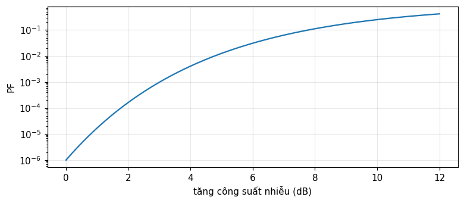
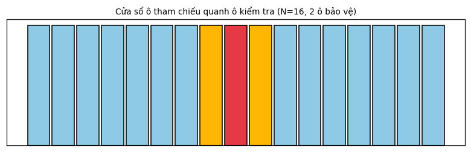

Vì sao ngưỡng cố định thất bại khi nhiễu nền thay đổi, bộ dò trung bình ô tham chiếu (CA-CFAR), mô hình mục tiêu Swerling, các biến thể GO-CFAR và SO-CFAR cho biên nhiễu, và CFAR phân tán với luật hợp nhất AND/OR (Barkat, chương 11 và 12).
MODULE 26 · Barkat, chương 11 và 12, tr. 627 đến 670
Dò ngưỡng thích nghi CFAR
Giải thích vì sao một ngưỡng cố định thất bại khi phương sai nhiễu nền không biết trước hay thay đổi theo thời gian, và định lượng độ nhạy của P_F.
Suy ra bộ dò CA-CFAR từ ước lượng hợp lý cực đại phương sai nền qua các ô tham chiếu, và tính P_F,P_D dạng đóng.
Mô tả họ mật độ Chi bình phương tổng quát của các mô hình mục tiêu Swerling, và nhận ra Rayleigh với k=1.
Giải thích hiệu ứng che khuất (masking) và hiệu ứng bắt giữ (capture) tại biên nhiễu, và cách GO-CFAR, SO-CFAR khắc phục từng trường hợp.
Suy ra ngưỡng tối ưu cho CFAR phân tán bằng nhân tử Lagrange, và tính P_D,P_F toàn cục theo luật hợp nhất AND, OR.
Dùng nút, chấm tròn hoặc phím ← → để chuyển slide.
PHẦN 1/5
01
Vì sao ngưỡng cố định thất bại
Bối cảnh: Nhiễu cộng thêm nhiễu tán xạ không mong muốn (clutter — từ địa hình, biển, mưa) khiến môi trường radar thực tế không dừng, phương sai nền không biết trước.
Vướng mắc: Với ngưỡng cố định, P_F=\exp(-\gamma^2/2\sigma^2); chỉ cần \sigma^2 tăng nhẹ, P_F tăng vọt nhiều bậc độ lớn — không thể chấp nhận cho xử lý dữ liệu.
Giải pháp: Giải pháp: ngưỡng thích nghi (adaptive threshold), ước lượng mức nhiễu nền tại chỗ từ các ô lân cận và tự động điều chỉnh — giữ tỉ lệ báo động giả không đổi (constant false alarm rate, CFAR).
Clutter: nhiễu tán xạ không mong muốn
Độ nhạy khủng khiếp của ngưỡng cố định
Ý tưởng CFAR: ngưỡng thích nghi
1/5 · Vì sao ngưỡng cố định thất bại
Clutter: tín hiệu không mong muốn từ môi trường
Trong dò tìm radar thực tế, mục tiêu bị chôn vùi trong nhiễu nhiệt cộng với clutter — thuật ngữ chỉ mọi tín hiệu radar không mong muốn từ vật tán xạ không phải mục tiêu quan tâm: địa hình, biển, mưa, chim, côn trùng, chaff (Barkat, tr. 627 đến 628). Vì môi trường hoạt động của radar phụ thuộc thời tiết và vị trí, tín hiệu trả về không dừng về mặt thống kê, với phương sai không biết trước tại đầu vào bộ thu.
1/5 · Vì sao ngưỡng cố định thất bại
Ngưỡng cố định: mẫu số nhạy cảm đến mức nguy hiểm
Với một xung đơn và ngưỡng cố định \gamma, xác suất báo động giả là P_F=\exp(-\gamma^2/2\sigma^2), với \sigma^2 là phương sai nhiễu tổng (nhiệt cộng clutter) (Barkat, tr. 627 đến 628). Gọi P_{Fd} là xác suất báo động giả thiết kế ứng với phương sai thiết kế \sigma_d^2; nếu phương sai thực \sigma^2 khác \sigma_d^2, P_F=P_{Fd}^{(\sigma_d^2/\sigma^2)}.
Số đo: tăng 3 dB công suất nhiễu, P_F tăng hơn 1000 lần
Với P_{Fd}=10^{-6}, tăng công suất nhiễu chỉ 3 dB (tức \sigma^2/\sigma_d^2\approx2) đã làm P_F thực tế tăng hơn 1000 lần — hoàn toàn không chấp nhận được cho xử lý dữ liệu, dù bằng máy tính hay người vận hành (Barkat, tr. 628 đến 629, hình 11.1). Số đo: với P_{Fd} = 1.0e-06, tăng 3 dB cho P_F thực tế = 1.0000e-03, tỉ số tăng 1000 lần.

Hình 1. Xác suất báo động giả thực tế tăng theo hàm mũ khi công suất nhiễu tăng, với ngưỡng cố định thiết kế cho PFd=1e-6.
1/5 · Vì sao ngưỡng cố định thất bại
Cấu trúc radar và vị trí của bộ xử lý CFAR
Radar (RAdio Detection And Ranging) phát năng lượng điện từ và trích thông tin mục tiêu từ tín hiệu dội về: khoảng cách từ độ trễ thời gian, hướng từ ăng-ten định hướng, tốc độ từ dịch Doppler. Bộ xử lý tín hiệu (signal processor), nằm giữa bộ thu và bộ xử lý dữ liệu, thực hiện nén xung, khử clutter Doppler, và xử lý CFAR — mạch CFAR giữ tỉ lệ báo động giả không đổi và tương đối thấp, tránh làm bão hòa hệ thống hoặc người vận hành (Barkat, tr. 629 đến 631).
1/5 · Vì sao ngưỡng cố định thất bại
Ý tưởng cốt lõi: ước lượng nhiễu tại chỗ từ ô lân cận
Finn và Johnson đề xuất dùng một kênh tham chiếu (reference channel): các ô khoảng cách xung quanh ô đang kiểm tra được dùng làm ô tham chiếu, cho một ước lượng mức nhiễu nền tại chỗ, từ đó điều chỉnh ngưỡng quyết định (Barkat, tr. 634 đến 635). Đây chính là ý tưởng CFAR (constant false alarm rate): ngưỡng \"thích nghi\" theo môi trường thay đổi, thay vì cố định.
1/5 · Vì sao ngưỡng cố định thất bại
Tự kiểm tra phần 1
Clutter là gì trong bối cảnh radar?
Với ngưỡng cố định, tăng nhẹ phương sai nhiễu gây hậu quả gì cho P_F?
Ý tưởng cốt lõi của CFAR là gì?
Gợi ý: tín hiệu radar không mong muốn từ vật tán xạ không phải mục tiêu; P_F tăng vọt nhiều bậc độ lớn; ước lượng nhiễu tại chỗ từ ô tham chiếu lân cận, tự động điều chỉnh ngưỡng.
PHẦN 2/5
02
Bộ dò trung bình ô tham chiếu (CA-CFAR)
Bối cảnh: Ô tham chiếu (dẫn đầu và theo sau ô kiểm tra, tách biệt bởi ô bảo vệ) cho N mẫu độc lập cùng phân phối mũ; tổng Z=\sum X_i là ước lượng hợp lý cực đại của mức nhiễu nền.
Vướng mắc: Vì Z tuân theo phân phối Gamma (N,2\sigma^2), P_F=1/(1+T)^N dạng đóng — cho ngưỡng nhân T=P_F^{-1/N}-1 không phụ thuộc \sigma^2 chưa biết.
Giải pháp:P_D=[(1+S)/(1+S+T)]^N tiến tới hiệu năng Neyman–Pearson lý tưởng khi N\to\infty — CFAR đánh đổi một khoản tổn thất hiệu năng hữu hạn để không cần biết \sigma^2.
Ô tham chiếu, ô bảo vệ, ô kiểm tra
Z là Gamma, P_F dạng đóng
Ngưỡng nhân T và xác suất phát hiện P_D
2/5 · Bộ dò trung bình ô tham chiếu (CA-CFAR)
Cấu trúc bộ dò: đường trễ và các ô tham chiếu
Đầu ra bộ tách sóng bình phương (square-law detector) được đưa vào đường trễ có vòi (tapped delay line) tạo các ô tham chiếu. Để tránh năng lượng tín hiệu tràn từ ô kiểm tra sang ô lân cận làm sai lệch ước lượng clutter, các ô sát ngay cạnh — gọi là ô bảo vệ (guard cells) — bị bỏ qua hoàn toàn. Cửa sổ tham chiếu U (tổng N/2 ô dẫn đầu) và V (tổng N/2 ô theo sau) được cộng lại thành Z=U+V, ước lượng mức clutter (Barkat, tr. 635 đến 637, hình 11.11, 11.12).

Hình 2. Sơ đồ cửa sổ CA-CFAR: N/2 ô dẫn đầu và N/2 ô theo sau (xanh) tạo Z=U+V, hai ô bảo vệ (vàng) bị bỏ qua, ô kiểm tra ở giữa (đỏ).
2/5 · Bộ dò trung bình ô tham chiếu (CA-CFAR)
Mô hình thống kê: mũ dưới cả hai giả thuyết
Với mục tiêu Swerling loại 1 (khuếch tán chậm) chôn trong nhiễu Gauss trắng, đầu ra bộ tách sóng bình phương của ô kiểm tra có mật độ mũ: f_{Y|H_1}(y|H_1)=\frac{1}{2\sigma^2(1+S)}\exp\!\left[-\frac{y}{2\sigma^2(1+S)}\right], f_{Y|H_0}(y|H_0)=\frac{1}{2\sigma^2}\exp(-\frac{y}{2\sigma^2}), với S là tỉ số tín hiệu-tạp âm mục tiêu (Barkat, tr. 637 đến 638). Ô tham chiếu X_i độc lập cùng phân phối mũ giống H_0.
2/5 · Bộ dò trung bình ô tham chiếu (CA-CFAR)
Z là Gamma (N,2\sigma^2): P_F dạng đóng gọn
Tổng N biến mũ độc lập cùng phân phối là biến Gamma (N,2\sigma^2), với hàm sinh mô-men M_Z(t)=(1-2\sigma^2t)^{-N} (Barkat, tr. 638 đến 639). Từ P_D=E_Z[P(Y>TZ|Z,H_1)]=M_Z[T/2\sigma^2(1+S)] và đặt S=0 cho P_F: P_F=M_Z(T/2\sigma^2)=(1+T)^{-N} — không còn phụ thuộc \sigma^2 chưa biết! Đảo ngược cho ngưỡng nhân T=P_F^{-1/N}-1.
Xác suất báo động giả và ngưỡng nhân của CA-CFAR
P_F=\frac{1}{(1+T)^N},\qquad T=P_F^{-1/N}-1
2/5 · Bộ dò trung bình ô tham chiếu (CA-CFAR)
Xác suất phát hiện: cận Neyman–Pearson khi N\to\infty
Thay T/2\sigma^2 bằng T/[2\sigma^2(1+S)] trong công thức P_F, ta được P_D=\left[\dfrac{1+S}{1+S+T}\right]^N (Barkat, tr. 639). Với nền nhiễu đồng nhất, CA-CFAR tối ưu theo nghĩa P_D của nó tiến tới P_D của bộ dò Neyman–Pearson lý tưởng (biết \sigma^2) khi số ô tham chiếu N\to\infty — luôn có một tổn thất CFAR hữu hạn khi N hữu hạn, đổi lấy việc không cần biết \sigma^2.
Xác suất phát hiện của CA-CFAR
P_D=\left(\frac{1+S}{1+S+T}\right)^{N}
2/5 · Bộ dò trung bình ô tham chiếu (CA-CFAR)
Số đo: T, P_F, P_D khớp mô phỏng Monte Carlo
Số đo: với N=16, thiết kế P_{Fd}=10^{-4}: ngưỡng nhân T = 0.7783. Mô phỏng Monte Carlo 2 triệu lần (sinh N mẫu mũ tham chiếu và một mẫu kiểm tra): P_F đo được là 9.90e-05, khớp thiết kế 1.0e-04. Với S=5: P_D lý thuyết [(1+S)/(1+S+T)]^N = 0.1421, khớp mô phỏng 0.1413.
2/5 · Bộ dò trung bình ô tham chiếu (CA-CFAR)
Tự kiểm tra phần 2
Vai trò của các ô bảo vệ (guard cells) là gì?
Vì sao P_F=1/(1+T)^N không còn phụ thuộc \\sigma^2?
P_D của CA-CFAR tiến tới hiệu năng nào khi N\\to\\infty?
Gợi ý: tránh năng lượng tín hiệu từ ô kiểm tra tràn sang làm sai lệch ước lượng clutter; vì \sigma^2 triệt tiêu trong tỉ số T/2\sigma^2 khi thay vào hàm sinh mô-men Gamma; hiệu năng của bộ dò Neyman–Pearson lý tưởng (biết \sigma^2).
PHẦN 3/5
03
Mô hình mục tiêu Swerling
Bối cảnh: Tiết diện radar (RCS) của mục tiêu dao động do nhiều yếu tố (góc chiếu, tần số, chuyển động); bốn trường hợp Swerling mô hình hóa dao động này theo phân phối Rayleigh hay một-trội-cộng-Rayleigh.
Vướng mắc: Mọi trường hợp Swerling gộp thành một họ mật độ Chi bình phương tổng quát P_k(S) với tham số k; k=1 cho Rayleigh (Trường hợp 1, 2), k=2 cho một-trội-cộng-Rayleigh (Trường hợp 3, 4).
Giải pháp: Phân biệt quan trọng thứ hai: dao động theo lượt quét (scan-to-scan, Trường hợp 1, 3) hay theo từng xung (pulse-to-pulse, Trường hợp 2, 4) — ảnh hưởng đến cách tích lũy xung trong bộ xử lý.
Vì sao tiết diện radar dao động
Bốn trường hợp Swerling và họ Chi bình phương
Số đo: mật độ chuẩn hóa và trung bình đúng m_s
3/5 · Mô hình mục tiêu Swerling
Vì sao tiết diện radar không phải hằng số
Tiết diện radar (radar cross section, RCS) là diện tích tán xạ hiệu dụng của mục tiêu nhìn từ radar. Vì mục tiêu gồm nhiều phần tử tán xạ, và tín hiệu dội từ mỗi phần tử phụ thuộc góc chiếu, tần số, phân cực sóng, chuyển động và rung động của mục tiêu, RCS dao động theo thời gian (Barkat, tr. 640). Hiệu ứng dao động đòi hỏi tỉ số tín hiệu-tạp âm cao hơn để đạt xác suất phát hiện cao, so với tín hiệu không dao động.
3/5 · Mô hình mục tiêu Swerling
Quét (scan) và bốn trường hợp Swerling
Một lượt quét (scan) là khi chùm chính của ăng-ten hoàn tất một lần dò toàn vùng giám sát. Dao động chậm, từ lượt quét này sang lượt quét khác (nhưng không đổi trong một nhóm xung) gọi là scan-to-scan; dao động nhanh, đổi theo từng xung trong nhóm, gọi là pulse-to-pulse. Trường hợp 1 (scan-to-scan, Rayleigh) và 2 (pulse-to-pulse, Rayleigh) ứng với mục tiêu gồm nhiều phần tử tán xạ độc lập, không có phần tử trội (như máy bay lớn); Trường hợp 3, 4 ứng với một phần tử trội cộng các phần tử nhỏ khác (như tên lửa) (Barkat, tr. 640 đến 641).
3/5 · Mô hình mục tiêu Swerling
Họ mật độ Chi bình phương tổng quát P_k(S)
Tất cả các trường hợp Swerling 1 đến 4 gộp lại thành một họ: P_k(S)=\dfrac1{\Gamma(k)}\left(\dfrac{k}{m_s}\right)^kS^{k-1}\exp\!\left(-\dfrac{kS}{m_s}\right), S\ge0, với m_s là tỉ số tín hiệu-tạp âm trung bình, k=m_s^2/\text{var}[S] (Barkat, tr. 641 đến 642). Trường hợp 1, 2 (Rayleigh) ứng với k=1; Trường hợp 3, 4 (một-trội-cộng-Rayleigh) ứng với k=2; Trường hợp 5 (không dao động) ứng với k\to\infty.
Mật độ Chi bình phương tổng quát của mô hình Swerling
Số đo: với m_s=3, tích phân số của P_k(S) trên [0,\infty) cho 1 tại k=1 và 1 tại k=2 (cả hai gần 1, xác nhận chuẩn hóa đúng). Trung bình tích phân số \int SP_k(S)\,dS cho 3 tại k=1 và 3 tại k=2 — cả hai khớp m_s=3 đã đặt, đúng như định nghĩa của m_s.
3/5 · Mô hình mục tiêu Swerling
Vì sao mô hình mục tiêu quan trọng cho thiết kế CFAR
Công thức P_D=[(1+S)/(1+S+T)]^N của phần 2 giả định S là một hằng số đã biết — thực ra S ngẫu nhiên theo mô hình Swerling. Với Trường hợp 1 (đã dùng ở phần 2), P_D thực tế cần lấy trung bình theo P(S) của (11.20) trên toàn miền S; với các trường hợp khác, cần dùng P_k(S) tương ứng. Việc chọn sai mô hình mục tiêu (ví dụ dùng k=1 cho một mục tiêu thực chất k=2) làm sai lệch P_D dự đoán so với hiệu năng thực tế của hệ thống.
3/5 · Mô hình mục tiêu Swerling
Tự kiểm tra phần 3
Dao động scan-to-scan khác pulse-to-pulse ở điểm nào?
Giá trị k nào ứng với mục tiêu Rayleigh (nhiều phần tử tán xạ độc lập)?
Trường hợp Swerling 5 (không dao động) ứng với giá trị k nào?
Gợi ý: scan-to-scan đổi giữa các lượt quét nhưng không đổi trong một nhóm xung, pulse-to-pulse đổi theo từng xung; k=1; k\to\infty.
PHẦN 4/5
04
Biên nhiễu: che khuất, bắt giữ, và GO/SO-CFAR
Bối cảnh: CA-CFAR giả định nền đồng nhất; tại biên nhiễu (như rìa vùng mưa), hai kịch bản gây hại: ô kiểm tra trong vùng sạch nhưng tham chiếu nhiễm clutter (che khuất — masking), hoặc ngược lại (bắt giữ — capture).
Vướng mắc: SO-CFAR (chọn nhỏ hơn của U,V) tránh che khuất khi ô kiểm tra sạch nhưng một nửa tham chiếu nhiễm clutter — giữ P_D gần mức danh nghĩa thay vì bị đè xuống.
Giải pháp: GO-CFAR (chọn lớn hơn của U,V) kiềm chế báo động giả tăng vọt khi ô kiểm tra nằm trong clutter nhưng một nửa tham chiếu sạch — tránh ngưỡng bị kéo xuống quá thấp.
Biên nhiễu: hai kịch bản gây hại
GO-CFAR và SO-CFAR: chọn lớn hơn hay nhỏ hơn
Số đo: mỗi biến thể khắc phục đúng kịch bản của nó
4/5 · Biên nhiễu: che khuất, bắt giữ, và GO/SO-CFAR
Mô hình biên nhiễu: bước nhảy công suất clutter
Môi trường thực không thể mô tả bằng một mô hình clutter duy nhất. Nền đồng nhất (homogeneous) nghĩa là các ô tham chiếu độc lập cùng phân phối; biên nhiễu (clutter edge) mô tả tình huống có bước chuyển công suất clutter theo khoảng cách — như rìa vùng mưa (Barkat, tr. 642 đến 644, hình 11.14). Hai kịch bản nghiêm trọng có thể xảy ra tùy vị trí biên so với ô kiểm tra và cửa sổ tham chiếu.
4/5 · Biên nhiễu: che khuất, bắt giữ, và GO/SO-CFAR
Che khuất (masking): ô kiểm tra sạch, tham chiếu nhiễm clutter
Nếu ô kiểm tra nằm trong vùng sạch nhưng một số ô tham chiếu nằm trong clutter, ước lượng Z=U+V của CA-CFAR bị thổi phồng, kéo ngưỡng lên cao quá mức cần thiết — làm giảm P_D và P_F tại vùng sạch. Đây gọi là hiệu ứng che khuất (masking effect): mục tiêu thật có thể không bị phát hiện dù nằm trong vùng sạch, chỉ vì các ô lân cận (không phải ô kiểm tra) bị nhiễm clutter (Barkat, tr. 643).
4/5 · Biên nhiễu: che khuất, bắt giữ, và GO/SO-CFAR
Bắt giữ (capture): ô kiểm tra trong clutter, tham chiếu một phần sạch
Ngược lại, nếu ô kiểm tra nằm trong clutter nhưng một số ô tham chiếu nằm trong vùng sạch, ước lượng CA-CFAR bị kéo xuống thấp — ngưỡng quá thấp khiến xác suất báo động giả tăng không thể chấp nhận. Hansen và Sawyers đề xuất GO-CFAR (greatest-of, chọn lớn hơn của U,V) để kiềm chế tình huống này (Barkat, tr. 643 đến 644).
GO-CFAR và SO-CFAR
Z_{GO}=2\max(U,V),\qquad Z_{SO}=2\min(U,V)
4/5 · Biên nhiễu: che khuất, bắt giữ, và GO/SO-CFAR
SO-CFAR: khắc phục che khuất khi có nhiều mục tiêu
Weiss chỉ ra rằng khi có một hay nhiều mục tiêu gây nhiễu trong ô tham chiếu, GO-CFAR hoạt động kém; Trunk đề xuất SO-CFAR (smallest-of, chọn nhỏ hơn của U,V) để xử lý trường hợp này, giúp giữ độ phân giải mục tiêu tốt hơn (Barkat, tr. 644). Trực giác: khi ô kiểm tra sạch nhưng một nửa tham chiếu nhiễm clutter (che khuất), chọn nửa sạch hơn (\min) làm ước lượng nhiễu tránh việc ngưỡng bị kéo lên bởi nửa nhiễm clutter.
4/5 · Biên nhiễu: che khuất, bắt giữ, và GO/SO-CFAR
Số đo: mỗi biến thể khắc phục đúng kịch bản của nó
Số đo (kịch bản che khuất, N=16, S=8, P_{Fd}=10^{-3}, nửa tham chiếu trong clutter công suất gấp 3, ô kiểm tra sạch): P_D danh nghĩa (không clutter) = 0.3937; CA-CFAR cho P_D = 0.1668 (bị che khuất, thấp hơn hẳn); SO-CFAR cho P_D = 0.4051 (gần danh nghĩa). Kịch bản bắt giữ (ô kiểm tra trong clutter, nửa tham chiếu sạch): CA-CFAR cho P_F = 0.0085 (tăng vọt so với thiết kế 1.0e-03); GO-CFAR cho P_F = 0.0025 (được kiềm chế tốt hơn hẳn).
4/5 · Biên nhiễu: che khuất, bắt giữ, và GO/SO-CFAR
Tự kiểm tra phần 4
Hiệu ứng che khuất (masking) xảy ra trong tình huống nào?
GO-CFAR chọn giá trị nào giữa U và V làm ước lượng nhiễu?
SO-CFAR phù hợp hơn GO-CFAR trong tình huống nào?
Gợi ý: ô kiểm tra sạch nhưng một phần tham chiếu nhiễm clutter; giá trị lớn hơn \max(U,V); khi ô kiểm tra sạch nhưng tham chiếu một phần nhiễm clutter (che khuất) hoặc có mục tiêu gây nhiễu.
PHẦN 5/5
05
CFAR phân tán: luật hợp nhất AND và OR
Bối cảnh: Với nhiều cảm biến phân tán quan sát cùng hiện tượng, mỗi bộ dò cục bộ gửi quyết định nhị phân D_i về trung tâm hợp nhất thay vì toàn bộ dữ liệu thô — tiết kiệm băng thông truyền tin.
Vướng mắc: Mỗi bộ dò cục bộ là một CA-CFAR với ngưỡng nhân T_i riêng; cực đại P_D toàn cục với ràng buộc P_F toàn cục cố định bằng nhân tử Lagrange cho một hệ phương trình cho \{T_i\} tối ưu.
Giải pháp: Luật AND (mọi bộ dò phải đồng thuận) cho P_D=\prod P_{Di}, P_F=\prod P_{Fi} — rất nhỏ cho cả hai; luật OR (một bộ dò đồng ý là đủ) cho P_D=1-\prod(1-P_{Di}) — lớn hơn cho cả hai.
Hệ thống cảm biến phân tán và trung tâm hợp nhất
Tối ưu ngưỡng bằng nhân tử Lagrange
Số đo: công thức AND, OR khớp mô phỏng
5/5 · CFAR phân tán: luật hợp nhất AND và OR
Vì sao cần phát hiện phân tán
Với vùng giám sát rộng hay nhiều mục tiêu, nhiều bộ thu phân tán về địa lý cùng quan sát một hiện tượng. Thay vì truyền toàn bộ dữ liệu thô về một bộ xử lý trung tâm (tốn băng thông), mỗi cảm biến xử lý cục bộ và chỉ gửi quyết định nhị phân D_i\in\{0,1\} về trung tâm hợp nhất dữ liệu (data fusion center), nơi các quyết định cục bộ được kết hợp theo một luật hợp nhất để ra quyết định toàn cục D_0 (Barkat, tr. 665 đến 666).
5/5 · CFAR phân tán: luật hợp nhất AND và OR
Mỗi cảm biến là một CA-CFAR với ngưỡng riêng
Barkat và Varshney phát triển lý thuyết CA-CFAR phân tán cho mục tiêu Swerling 1 trong nhiễu Gauss trắng mức chưa biết. Xác suất phát hiện cục bộ tại cảm biến i là P_{Di}=\left[\dfrac{1+S}{1+S+T_i}\right]^{N_i} — đúng công thức CA-CFAR của phần 2, chỉ thêm chỉ số i cho từng cảm biến (Barkat, tr. 666 đến 667).
5/5 · CFAR phân tán: luật hợp nhất AND và OR
Tối ưu ngưỡng bằng nhân tử Lagrange
Mục tiêu: cực đại P_D toàn cục trong khi giữ P_F toàn cục ở một giá trị \alpha cố định. Lập hàm mục tiêu J(T_1,\ldots,T_N)=P_D+\lambda[P_F-\alpha], giải hệ \partial J/\partial T_j=0, j=1,\ldots,N, cho các ngưỡng nhân tối ưu \{T_i\} (Barkat, tr. 667 đến 668) — đúng kỹ thuật nhân tử Lagrange đã gặp ở kiểm định Neyman–Pearson (module 21).
Với luật AND (quyết định toàn cục là H_1 chỉ khi mọi cảm biến đều quyết định H_1), vì các cảm biến độc lập: P_D=\prod_{i=1}^NP_{Di}, P_F=\prod_{i=1}^NP_{Fi} (Barkat, tr. 668 đến 669). Với luật OR (chỉ cần một cảm biến quyết định H_1 là đủ): P_D=1-\prod_{i=1}^N(1-P_{Di}), P_F=1-\prod_{i=1}^N(1-P_{Fi}). Luật AND cho P_D,P_F toàn cục nhỏ hơn mỗi P_{Di},P_{Fi} cục bộ; luật OR cho lớn hơn.
Số đo: với hai cảm biến độc lập, P_{D1}=0.8, P_{D2}=0.7, P_{F1}=0.01, P_{F2}=0.02: luật AND cho P_D = 0.56 (lý thuyết) khớp mô phỏng Monte Carlo 2 triệu lần 0.5602, và P_F = 0.0002 khớp 0.0002. Luật OR cho P_D = 0.94 khớp 0.9397, và P_F = 0.0298 khớp 0.0298 — xác nhận cả hai công thức tích đúng cho hệ thống độc lập.
5/5 · CFAR phân tán: luật hợp nhất AND và OR
Nhìn lại: từ một ô đơn lẻ đến mạng cảm biến
Toàn chương xây dựng theo từng lớp: ngưỡng cố định thất bại (phần 1) → CA-CFAR ước lượng nhiễu cục bộ giải quyết vấn đề đó (phần 2) → mô hình mục tiêu Swerling làm P_D chính xác hơn (phần 3) → GO/SO-CFAR xử lý khi giả định đồng nhất bị vi phạm (phần 4) → CFAR phân tán mở rộng toàn bộ ý tưởng sang mạng nhiều cảm biến (phần 5). Mỗi lớp giải quyết đúng một hạn chế của lớp trước.
5/5 · CFAR phân tán: luật hợp nhất AND và OR
Tự kiểm tra phần 5
Vì sao cảm biến phân tán gửi quyết định nhị phân thay vì dữ liệu thô?
Luật AND cho P_D,P_F toàn cục lớn hơn hay nhỏ hơn mỗi giá trị cục bộ?
Kỹ thuật nhân tử Lagrange dùng để làm gì trong CFAR phân tán?
Gợi ý: để tiết kiệm băng thông truyền tin giữa cảm biến và trung tâm; nhỏ hơn (tích của các xác suất nhỏ hơn 1); cực đại P_D toàn cục trong khi giữ P_F toàn cục cố định.
TỔNG KẾT
Điều cần mang theo
Với ngưỡng cố định, P_F=\exp(-\gamma^2/2\sigma^2) cực kỳ nhạy với phương sai nhiễu chưa biết; tăng nhẹ vài dB đã làm P_F tăng hàng nghìn lần — cần ngưỡng thích nghi.
CA-CFAR ước lượng nhiễu nền bằng tổng N ô tham chiếu (Gamma phân phối), cho P_F=1/(1+T)^N độc lập với \sigma^2, và P_D=[(1+S)/(1+S+T)]^N tiến tới hiệu năng lý tưởng khi N\to\infty.
Mô hình mục tiêu Swerling gộp thành họ Chi bình phương P_k(S): k=1 (Rayleigh, nhiều tán xạ độc lập), k=2 (một-trội-cộng-Rayleigh); phân biệt thêm scan-to-scan hay pulse-to-pulse.
Tại biên nhiễu, che khuất (ô kiểm tra sạch, tham chiếu nhiễm) và bắt giữ (ngược lại) làm CA-CFAR sai; SO-CFAR (min) khắc phục che khuất, GO-CFAR (max) khắc phục bắt giữ.
CFAR phân tán tối ưu ngưỡng từng cảm biến bằng nhân tử Lagrange; luật AND cho P_D,P_F toàn cục là tích các giá trị cục bộ (nhỏ hơn), luật OR cho 1-\prod(1-\cdot) (lớn hơn).
📜 Bối cảnh lý thuyết & lịch sử
Bộ dò trung bình ô tham chiếu (CA-CFAR) được Finn và Johnson đề xuất; mô hình mục tiêu dao động Swerling mang tên Peter Swerling, người phát triển bốn trường hợp kinh điển vào những năm 1950 cho phân tích radar. GO-CFAR (Hansen và Sawyers) và SO-CFAR (Trunk, và ứng dụng bởi Weiss) phát triển những năm 1970-1980 để xử lý biên nhiễu và mục tiêu gây nhiễu. Lý thuyết CFAR phân tán do chính Barkat cùng Varshney phát triển, xuất bản trong các công trình được trích dẫn ở chương 12 (Barkat, tr. 634, 640, 643 đến 644, 666, phần tài liệu tham khảo cuối chương).
🔎 Case study thực tế
Từ một ngưỡng mong manh đến một mạng cảm biến bền vững. Với P_{Fd}=10^{-6}, tăng 3 dB công suất nhiễu làm P_F tăng 1000 lần — lý do CFAR ra đời. Với N=16 ô tham chiếu, thiết kế P_{Fd}=10^{-4}: ngưỡng nhân T=0.7783, P_F mô phỏng 9.90e-05 khớp thiết kế; với S=5, P_D=0.1421 khớp mô phỏng 0.1413. Kiểm tra mô hình mục tiêu: mật độ Swerling k=1 và k=2 đều chuẩn hóa đúng (1, 1) và cho trung bình khớp m_s=3 (3, 3). Tại biên nhiễu: CA-CFAR bị che khuất còn P_D=0.1668 so với danh nghĩa 0.3937, trong khi SO-CFAR giữ được 0.4051; ngược lại CA-CFAR để P_F tăng vọt lên 0.0085 còn GO-CFAR kiềm chế xuống 0.0025. Cuối cùng, hợp nhất hai cảm biến độc lập bằng luật AND cho P_D=0.56 khớp mô phỏng 0.5602.
Notebook tự sinh dữ liệu bằng mã, không cần tải file ngoài. Mọi con số trên trang này được in ra từ notebook và đối chiếu bằng hai phương pháp độc lập.
⚠️ Những bẫy diễn giải sai
"CFAR loại bỏ hoàn toàn tổn thất hiệu năng so với bộ dò lý tưởng biết \sigma^2."
Sai: CA-CFAR chỉ tiến tới hiệu năng Neyman–Pearson lý tưởng khi N\to\infty; với N hữu hạn luôn có một tổn thất CFAR — cái giá phải trả để không cần biết \sigma^2 trước.
"GO-CFAR luôn tốt hơn SO-CFAR, hay ngược lại — một trong hai luôn ưu việt."
Không: mỗi biến thể khắc phục đúng một kịch bản khác nhau tại biên nhiễu — GO-CFAR tốt cho tình huống bắt giữ (kiềm chế P_F tăng vọt, số đo 0.0025 so với 0.0085), SO-CFAR tốt cho tình huống che khuất (giữ P_D, số đo 0.4051 so với 0.1668) — không có biến thể nào tối ưu cho mọi tình huống.
"Trong CFAR phân tán, luật OR luôn tốt hơn luật AND vì cho P_D toàn cục lớn hơn."
Không hẳn: luật OR cho P_D toàn cục lớn hơn nhưng đồng thời cũng cho P_F toàn cục lớn hơn (dễ báo động giả hơn); luật AND cho cả hai nhỏ hơn. Lựa chọn luật phụ thuộc ứng dụng cần ưu tiên P_D cao hay P_F thấp.
✅ Quiz tự kiểm tra
Bấm một đáp án để chấm ngay và xem giải thích. Kết quả không được lưu.
Nguồn tham khảo
M. Barkat, Signal Detection and Estimation, 2nd ed., Artech House, 2005, chương 11 và 12 (tr. 627 đến 670).
Tài liệu do chương trích: H. M. Finn và R. S. Johnson (CA-CFAR); P. Swerling (mô hình mục tiêu, thập niên 1950); V. G. Hansen và J. H. Sawyers (GO-CFAR); G. V. Trunk, M. Weiss (SO-CFAR); M. Barkat và P. K. Varshney (CFAR phân tán).
Nội dung được viết với sự hỗ trợ của AI (Claude), rồi được kiểm lại. Mọi con số do notebook Jupyter tính ra và đối chiếu bằng hai phương pháp độc lập; số trang trích dẫn lấy từ văn bản OCR của hai giáo trình gốc. Vẫn có thể còn sai sót, mong bạn báo lại.